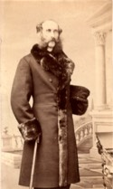
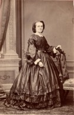

Beaubien-Perrault-Benington - Family Card
Beaubien-Perrault-Benington - Family Card
Jacques Philippe Saveuse De Beaujeu(1770-1772 - 19 Jun 1832)Philippe Joseph Aubert De Gaspé(30 Oct 1786 - 29 Jan 1871)
Catherine Chaussegros De LérySusanne Allison(abt 1795 - 13 Aug 1847)
m. 20 Sep 1832, St-Jean-Port-Joli, Québec

b. 4 Jun 1810, Montréal, Québec
d. 29 Jul 1865, Coteau-du-Lac, Québec
br.
occ. seigneur, politicien
edu.
rel.
Flags.

b. 23 Oct 1815, St-Jean-Port-Joli, Québec
d. 30 Mar 1895, Coteau-du-Lac, Québec
br. 3 Apr 1895, Coteau-du-Lac, Québec
occ.
edu.
rel.
Flags.
Children
Catherine Adele Suzanne Saveuse De Beaujeu(27 Jan 1836 - 8 Dec 1852)
Blanche Vandelmonde Armandine Anne Saveuse De Beaujeu(23 Jun 1843 - 21 Jan 1890)
Comte Philippe Arthur Quiquerand Villemonde Saveuse De Beaujeu(25 Aug 1845 - 15 Jan 1901)
Georges Raoul Léotalde Guichard Humbert Saveuse De Beaujeu(22 Jun 1847 - 11 Dec 1887)
M. Alice Béatrice Isabeau Saveuse De Beaujeu(20 Feb 1851 - )
Yvonne Laure Athenais Louise Saveuse De Beaujeu(31 Aug 1853 - 8 Sep 1878)